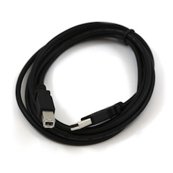
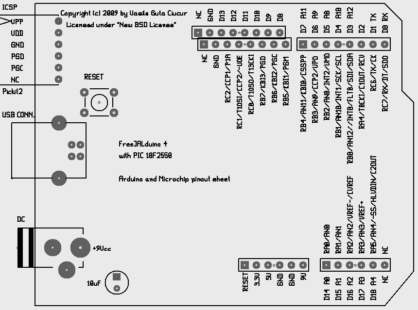

Board description
0. Disclaimer
I'm not responsible for anything which can occur (directly and indirectly) in making and using this board, attached and proposed projects and this documentation. This is a free project.
1. Forewords
The FreeJALduino, have his origins on TheBackShed.com forums. My adventure on microcontrollers world started when Gill sent to me a PICAXE08M chip along with a little breadboard and all components required to connect it to serial port. It was fantastic! Unfortunately, PICAXE can't be found in Romania so, I wanted to start with empty Microchip microcontrollers. I started with 12F675 chips (and you know what kind of chips I bought - I'm not good at shoppings) and I made a programmer for it. Everything worked nice but also problems started. First, I wanted to clean the PICAXE08M to use it as a real 12F683 (for a better logger, with his own Serial LCD and on chip calculations) but the pic programmer I built was not suitable for that and I had to say goodbye to my PICAXE08M/12F683 chip. I noted down that I need a good programmer. Because Bryan1 said that is time to try "real" microcontrollers for a "Super" Windmill controller/logger, I started research and I was able to buy a 16F877a (no 16F887 available at that time in my area). I burned it at first trial when I missed counting one hole when connected Vcc and GND wires on a breadboard. I wasn't happy at all. It was a lot of money and I wasn't able to blink a LED with it (using the same programmer). Imagine my face! And removing the chip from breadboard and inserting it in programmer, doing it back again, is a real pain - you know that is possible to not succeed at first trial when you design a program. If you bend only one pin, you can't trust it anymore. So, I noted down a learning board (but one very configurable) with ICSP capability (on board programming). The USB connection and an Arduino like board targets were rised on a discussion I had on Jallib blog. The discussions continued on Jallib group and two projects have born: Jaluino and FreeJALduino. Jaluino is designed to be a demonstration/learning board for JAL language and Jallib libraries. FreeJALduino try to gain something from a successful design (Arduino), a lot of already existing shields (daughter boards) and a relatively huge and enthusiast community, still remaining faithful to JAL but also being able to use Pinguino (in fact, any PIC language can be used) which is providing some kind of Arduino language for programming, porting some existing Arduino projects being possible.
2. So, this is FreeJALduino5
After playing with my first design (started from Eagle files of Freeduino project, which have a more permissive license comparing with Arduino) and proving the concept, I did a second board; wanted to have a better Arduino compatibility and few more useful features. Of course, in actual form can't compete with commercial ones but was designed at the beginning having in mind the posibility to be build at home, with local resources. I had in mind also my friends from TheBackShed because the main targets for this board were an USB CNC Router and USB Windmill controllers. I don't want to compete with other solutions from the forum. I just want to show that also I am able to do such a thing and to prove that I learned well. Of course, being receptive to advices and corrections from the team part.
Is not so pretty from close-up :P !
I will try to describe it well
3. The power!
The board can be powered directly (this time, on first design was possible to power only the chip, not available on board connectors) from USB, including attached shields but the maximum consumption must not exceed 100mAh. Always use an external power source when you have "heavy" shields(wall mart adapter, battery, etc.) recommended to be in 9-12Vcc range (you can be in LM7805 limits but regulators on board don't have coolers). On board we have two regulators, for 5Vcc and 3.3Vcc, the last one being connected only to board connectors.
Regarding to polarity (careful, we don't have a protecting diode on board - no space available), the inside barrel of the power adapter jack (see image from right) is positive (+) and outside barrel is negative (-, GND). The green jumper (I like to have blue jumpers on this board but referencing them by colors helps documenting) is used to select the power source. On upper image, the jumper is in "USB power source" position. But see bellow:
As power indicator, for both sources (usb and external), we have the green LED, outside the connectors to be visible when you insert a shield.
The LED's are 3mm diameter and are soldered on board without safety space, to not interfere with the shields (I was afraid a little in soldering them - I bought 10 pieces for each, just to be sure). Apart of Power and USB connectors, no one component are taller than board connectors - this is the target.
4. The testing LED and RESET button
On the original board Arduino (see the image from the right), it is possible to connect directly on socket board a LED between Digital 13 pin and GND because pin 13 is available via a limiting resistor (don't like this so, all pins from FreeJALduino board are available clear, with no limiting resistors). On FreeJALduino board is not possible but the LED is available on board. But is a multifunctional LED, configured by the blue jumper, having three states:
- With blue jumper on right side, the red LED is connected to Digital 13 pin and can be used in "Blink a LED" example - the users of Arduino tend to consider pin 13 as LED testing pin.
- With blue jumper on left side, the red LED is connected to Digital 2 pin and is used by bootloader as boot mode indicator - when bootloader is active, LED is on. When bootloader give the control to user application, the LED is switched off. From this moment you can use the LED as you want, even for "Blink a LED" example. Or you can use the pin to activate a relay, having the LED as indicator.
- Or, you can completely remove the blue jumper, freeing your pins for other activities. In this case, the LED can be used as a testing probe if you connect a wire to the center pin of jumper (on the market is such a wire) and connect it alternatively on all pins to test their integrity.
My personal preference is to use it as bootloader indicator so, I let the blue jumper on the left side (Pinguino boards do the same thing - this way, it have also Pinguino compatibility but more about this later).
Or better this image as reference:
You use the RESET button every time you want to enter in bootloader mode for uploading a new program or, every time something goes wrong and you need to restart the application. The bootloader will be described on another page.
5. The 100mill rule
For some unknown reason, on the original Arduino design one of the board connectors (the one with pin 13 on it) was slided 50mill on right direction, breaking the 100mill rules. That means you are not able to use 100mill proto boards to quickly make your own shields. Maybe was a marketing reason or some sort of a safety key, as you find on every connector, allowing the insertion of the shield in only one direction. But many "Arduino like" boards from the market came with their own solution so, I did the same.
6. The ICSP connector
This one allow you to connect a Pickit2 (or 3, or compatible) programmer directly to your board, so you will not have to remove the microcontroller to program it on a programmer. Still, as a safety rule, you need to remove the shield if you have any, remove the USB cable because of space, and the external power connector can be let there but my habbit is to remove it too. The Pickit 2 programmer connects directly to USB port of your portable notebook. The users are saing that if you have it, you don't need a bootloader anymore, saving 2Kb of flash memory. I agree. It is fast and very easy to program with it almost all pics from 10F, 12F, 16F to 18F pics. And also the new types which I don't remember right now. It was my first big investment regarding to microcontroller programing (second being the boards), I'm considering myself very lucky to have it. Is as easy as a PICAXE or a board with bootloader. Is also very useful on pics with low flash memory and no bootloader capabilities. The disavantage of using it, is that for every pic you must set his own fuses (is not hard once you get it and even more, jallib team included in their package useful examples for both 18F2550/18F4550 which are almost identical). Using a bootloader, you don't need to set fuses in your program anymore because are already set on your bootloader. The pinout, from the top to bottom of the ICSP connector as it is posted on board:
- VPP - 13Vcc programming power (boosted from 5V USB source)
- Vcc - 5Vcc
- GND - GND
- PGD - Data; goes to RB7 pin on microcontroller
- PGC - Clock; goes to RB6 pin on microcontroller
- Not connected on my board but with some special functions on Microchip original boards
I made a straight male connector from an angled one, as a bridge between Pickit2 programmer and the board. No problems anymore with programming the pics!
The position of green jumper (power jumper) does not matter; only if you let the external power connected.
7. USB connector
Is type B connector and it needs an A to B USB cable - a printer USB cable.

8. The pinout of board connectors
Mainly, I'm trying to follow Arduino notation (outside connectors in following image). But also present Microchip notations for 18F2550 pic (inside connectors). All pins are digital from D0 to D18. From them, 10 pins can be used as analog input from A0 to A4 and from A8 to A12 (A5 to A7 are available only on 18F4550 pics). Noted on board. D0 is RX pin and D1 is TX pin in case you want to use serial.

Right-click on image and select "View image" (Firefox option) to zoom it. Also, is better to print it on a paper. Of course, reading datasheet of 18F2550 pic is a must (included on CD).
9. Making the board
Altough the board can be made entirely with a permanent marker, I can recon it is quite an advanced project if you don't have the right tools and materials. At least it was for me. I used toner transfer method and for board connector holes I used some templates made from proto boards because you need some precision. Also, I used the back paper of sticky labels. Removed the labels and used the support paper to print the toner on it (on the soft surface, where the glue can't stick). Is a very good paper to transfer the toner because you can peel it off from the first try, without using water. But have one big issue. Is thin and have the tendance to melt when you print it. So, the shape of pcb can be changed. This is why I used a template even for microcontroller holes. And this is why I destroyed my first atempt on this board version - I made the holes without checking.
A gEDA PCB file can be downloaded from the project page. gEDA PCB (is not the last version but is the version which I worked with. Try the last one) have also an Windows version which have a little trick. If you open a file for the first time with it (or create a new one), you will see nothing in the working area! You just simply press "z" letter from the keyboard with the mouse pointer positioned in the working area and the board will appear. It may be required to install gtk+ libraries... see what installer say...
The board under test (his first test), powered directly by USB.
10. What next?
The next will be the drivers and the software needed to program and use the board. See this page.